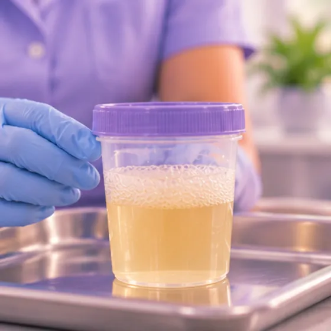

Radang buah pinggang selepas purpura alahan
Radang buah pinggang yang boleh berlaku selepas purpura alahan, iaitu ruam bintik ungu kemerahan pada kulit
Apa itu
Purpura alahan menyebabkan salur darah kecil meradang. Apabila buah pinggang terjejas, darah atau protein boleh bocor ke dalam air kencing, dan muka atau kaki mungkin bengkak.
- Buah pinggang
- Biasa pada kanak-kanak
- Air kencing berubah, bengkak
- Jumpa doktor
- Pakar buah pinggang (nefrologi); pakar kanak-kanak untuk kanak-kanak
- Biasa pada
- Kebanyakan kanak-kanak yang menghidap purpura alahan; orang dewasa juga boleh terjejas
- Berjangkit
- Tidak
- Perjalanan
- Berbeza-beza; ada yang perlu pemeriksaan jangka panjang, jadi hadiri setiap temu janji
Tanda biasa

Air kencing merah jambu atau merahHematuria 
Air kencing berbuihTanda proteinuria 
Muka sembab pada waktu pagiMuka sembab 
Selalunya tiada tanda pada awalnyaAsimptomatik
Tanda-tanda lain
- Sebelum atau pada masa yang sama: bintik ungu kemerahan pada kaki, sakit sendi atau sakit perut
Mengapa ia berlaku
- Sistem pertahanan badan bertindak balas berlebihan dan meradangkan salur darah kecil, termasuk di buah pinggang
- Ia selalunya bermula selepas jangkitan, seperti jangkitan tekak atau dada
- Kadangkala ubat atau pencetus lain ditemui, tetapi selalunya tidak
- Buah pinggang hanya terjejas pada sesetengah orang yang mengalami purpura alahan
Jumpa doktor dahulu jika
- Sukar bernafas, sakit dada, sawan, keliru, atau sakit kepala yang teruk dengan muntah: hubungi 999
- Sakit perut yang teruk, muntah darah, atau najis hitam atau berdarah: ke hospital segera
- Buang air kecil sangat sedikit, atau tiada langsung: ke hospital segera
- Air kencing berwarna merah, perang atau seperti cola, atau bengkak yang semakin teruk: jumpa doktor pada hari yang sama
- Bintik ungu kemerahan yang baharu, sakit sendi yang baharu atau demam: jumpa doktor secepat mungkin
- Kanak-kanak yang sangat tidak sihat, sangat mengantuk atau demam: jumpa doktor dengan segera
Jika mana-mana berkenaan, sila jumpa doktor sebelum sesi.
Halaman ini ialah maklumat am. Sila terus mengambil ubat biasa anda dan terus berjumpa doktor.
Teruskan mengambil ubat biasa anda dan terus berjumpa doktor. Sesi kami ialah sokongan lembut dan tidak menggantikan rawatan perubatan.
Menjaga diri

Jumpa doktor untuk pemeriksaanSusulan perubatan berkala 
Berehat secukupnyaRehat 
Kerap basuh tanganKebersihan tangan
Lebih banyak cara menjaga diri
- Tanya doktor atau ahli farmasi sebelum mengambil ubat tahan sakit, suplemen atau produk herba; ada yang boleh membebankan buah pinggang
- Ikut nasihat tentang garam, makanan dan cecair yang diberikan oleh doktor atau pakar diet anda
Beritahu ahli terapi anda
- Penyakit buah pinggang atau hati
- Tekanan darah tinggi
- Kulit luka, merah atau sakit
- Demam atau jangkitan aktif
Ahli terapi anda akan menyemaknya bersama anda sebelum bermula.
Soalan dan jawapan
Apakah Radang buah pinggang selepas purpura alahan?
Radang buah pinggang yang boleh berlaku selepas purpura alahan, iaitu ruam bintik ungu kemerahan pada kulit. Purpura alahan menyebabkan salur darah kecil meradang. Apabila buah pinggang terjejas, darah atau protein boleh bocor ke dalam air kencing, dan muka atau kaki mungkin bengkak.
Apakah tanda biasa Radang buah pinggang selepas purpura alahan?
Air kencing merah jambu atau merah · Air kencing berbuih · Muka sembab pada waktu pagi · Selalunya tiada tanda pada awalnya
Mengapa Radang buah pinggang selepas purpura alahan berlaku?
Sistem pertahanan badan bertindak balas berlebihan dan meradangkan salur darah kecil, termasuk di buah pinggang · Ia selalunya bermula selepas jangkitan, seperti jangkitan tekak atau dada · Kadangkala ubat atau pencetus lain ditemui, tetapi selalunya tidak · Buah pinggang hanya terjejas pada sesetengah orang yang mengalami purpura alahan
Bagaimana menjaga diri dengan Radang buah pinggang selepas purpura alahan?
Jumpa doktor untuk pemeriksaan · Berehat secukupnya · Kerap basuh tangan
Bolehkah sesi AI Body Master membantu Radang buah pinggang selepas purpura alahan?
Sesi ialah sokongan meridian tanpa jarum yang lembut untuk kesejahteraan anda. Ia tidak merawat atau menyembuhkan Radang buah pinggang selepas purpura alahan dan tidak menggantikan ubat atau doktor anda. Beritahu ahli terapi anda sebelum sesi bermula.
Keadaan berkaitan
Rujukan: General information based on public health sources such as Mayo Clinic, NHS, Cleveland Clinic and NCBI StatPearls.
Halaman dikemas kini: 2026-11-09